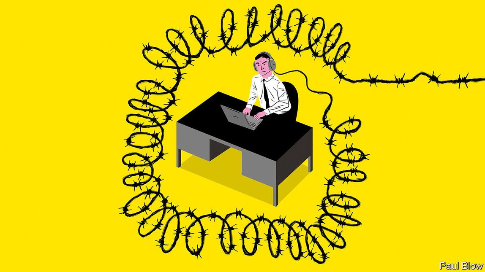

Text
2021-05-31T07:27:11+00:00
Bartleby
巴托比
巴托比
Abolishing executive offices
拆掉高管办公室
拆掉高管辦公室
The costs of office-less executives outweigh the benefits
取消高管办公室会得不偿失
取消高管辦公室會得不償失
IT IS A tradition of corporate architecture. A company’s top executives get offices on the top floor, often dubbed the C-suite after the “chiefs” who occupy it. The CEO resides in the “corner office”, with the biggest windows and best views. Junior staff suffer a few moments of trepidation when summoned upstairs.
公司架构里有一个传统。高管的办公室要安排在顶楼，通常叫做“C-suite”，因为在这里办公的高管头衔里都有Chief这个词。为CEO安排的是“转角办公室”，窗户最大，视野最佳。下级员工被召上楼去见老板时，心里会有点打鼓。
公司架構里有一個傳統。高管的辦公室要安排在頂樓，通常叫做“C-suite”，因為在這裡辦公的高管頭銜里都有Chief這個詞。為CEO安排的是“轉角辦公室”，窗戶最大，視野最佳。下級員工被召上樓去見老闆時，心裡會有點打鼓。
Some heterodox bosses shun this tradition. Reed Hastings of Netflix has no office, corner or otherwise, and huddles at random desks, for example. Now more staid firms are following suit. Executives in the London offices of HSBC, a banking giant, will no longer be based on the 42nd floor of the group’s Canary Wharf tower. Instead the floor will be converted into meeting rooms. Senior executives will “hot-desk” with everyone else.
一些喜欢打破常规的老板没有遵循这种传统。比如奈飞（Netflix）的里德·黑斯廷斯（Reed Hastings）就没有办公室，不只是没有转角办公室，连一般的办公室都没有，他总是随便找张桌子办公。现在，更多循规蹈矩的公司也纷纷效仿。银行业巨头汇丰在伦敦的管理层原本在位于金丝雀码头的大厦的42楼办公。该楼层将改造成多间会议室。高管们将和其他所有人一样，使用“公用办公桌”办公。
一些喜歡打破常規的老闆沒有遵循這種傳統。比如奈飛（Netflix）的里德·黑斯廷斯（Reed Hastings）就沒有辦公室，不只是沒有轉角辦公室，連一般的辦公室都沒有，他總是隨便找張桌子辦公。現在，更多循規蹈矩的公司也紛紛效仿。銀行業巨頭滙豐在倫敦的管理層原本在位於金絲雀碼頭的大廈的42樓辦公。該樓層將改造成多間會議室。高管們將和其他所有人一樣，使用“公用辦公桌”辦公。
A plausible argument for such a shift can be made. Staff morale would suffer if the rank-and-file are crammed in open-plan offices while the executives cling to cushy digs with panoramic vistas. When the top brass sit alongside their teams, they will be more in touch with how projects are going, and how staff are feeling. In theory, if the executives are visible, employees are more likely to approach them with problems.
这种转变有一个看似合理的依据。如果普通员工都挤在大开间的办公室里，高管却占据全景视野的舒适单间，员工士气会受打击。如果领导层与他们的团队一起办公，就会更了解项目的进展和员工的想法。从理论上讲，在能看得到高管时，员工更有可能会带着问题去找他们。
這種轉變有一個看似合理的依據。如果普通員工都擠在大開間的辦公室里，高管卻佔據全景視野的舒適單間，員工士氣會受打擊。如果領導層與他們的團隊一起辦公，就會更了解項目的進展和員工的想法。從理論上講，在能看得到高管時，員工更有可能會帶着問題去找他們。
But lingering bosses may equally hurt morale. One of the joys of office life is the freedom to enjoy a bit of banter with colleagues. This may include the odd crack about the management. In the presence of their boss staff will be constrained in what they talk about and the tone of their comments. They may feel the need to sound serious at all times, lest the quality of their commitment to their work come into doubt—after all, the manager may be right behind them.
但是，老板总在附近可能同样会打击士气。办公室生活的乐趣之一就是可以和同事们打趣说笑，偶尔可能也会挖苦一下管理层。当老板在场时，员工就得注意谈话的内容和评论的语气。他们可能会觉得时时刻刻都得一本正经地说话，以免被怀疑自己工作不够投入。毕竟，上司可能就在身后。
但是，老闆總在附近可能同樣會打擊士氣。辦公室生活的樂趣之一就是可以和同事們打趣說笑，偶爾可能也會挖苦一下管理層。當老闆在場時，員工就得注意談話的內容和評論的語氣。他們可能會覺得時時刻刻都得一本正經地說話，以免被懷疑自己工作不夠投入。畢竟，上司可能就在身後。
You also have to wonder whether executives will really spend every morning searching for a place to sit. Some hot desks will be a lot hotter than others. Once the chief financial officer has picked a desk on day one, deferential underlings will steer clear of that particular spot on subsequent days. In contrast, anyone who works closely with a particular executive will be tempted to pick a desk close by. The risk is of a “beach towels on sunbeds” syndrome where employees compete to get the desks nearest to (or farthest from) particular managers.
你也一定会想，高管是否真的会每天早上花时间找位置。有些公用办公桌会比其他办公桌抢手得多。一旦首席财务官在上任头一天选了某张桌子，毕恭毕敬的下属在接下来的日子里就不会再去坐那个位置。相反，任何与某个高管合作密切的人都会想要选择领导边上的位置。这样可能就会出现类似于“用大毛巾占沙滩椅”的现象，也就是员工会争相抢占离某位主管最近（或最远）的桌子。
你也一定會想，高管是否真的會每天早上花時間找位置。有些公用辦公桌會比其他辦公桌搶手得多。一旦首席財務官在上任頭一天選了某張桌子，畢恭畢敬的下屬在接下來的日子裡就不會再去坐那個位置。相反，任何與某個高管合作密切的人都會想要選擇領導邊上的位置。這樣可能就會出現類似於“用大毛巾占沙灘椅”的現象，也就是員工會爭相搶佔離某位主管最近（或最遠）的桌子。
Of course, the executive may be absent from the open floor for extended periods. Any meeting that involves confidential information, such as a future business plan or a career review, will have to be held in private. So the meeting rooms that HSBC is creating on the executive floor may end up being block-booked by the managers for much of the day.
当然，高管们可能很长时间都不会出现在开放式办公室里。像未来商业计划或员工评核等任何涉及机密信息的会议都必须保密进行。因此，最后可能出现的情形就是，汇丰银行在高管办公楼层改建的会议室大部分时间都被高管预订了。
當然，高管們可能很長時間都不會出現在開放式辦公室里。像未來商業計劃或員工評核等任何涉及機密信息的會議都必須保密進行。因此，最後可能出現的情形就是，滙豐銀行在高管辦公樓層改建的會議室大部分時間都被高管預訂了。
Even so, the lingering boss presents other problems. Anyone who has worked in an open-plan office will acknowledge that the babble of others talking can make it hard to concentrate at times. Managers may find themselves constantly being approached by team members with questions or problems for them to solve. Many people resort to headphones to shut out the background noise (and to signal their unavailability). But if managers do that, they run the risk of seeming shut off from their colleagues.
即便如此，老板可能会时不时出现在身后还带来了其他问题。在开放式办公室工作过的人都会认同，其他人说话的嗡嗡声有时会让人难以集中注意力。高管可能会发现不断有团队成员来找他们请示或解决问题。很多人会戴上耳机来屏蔽背景噪音（同时也是发出不想被打扰的信号）。但如果高管这样做，可能就会给人拒同事于千里之外的感觉。
即便如此，老闆可能會時不時出現在身後還帶來了其他問題。在開放式辦公室工作過的人都會認同，其他人說話的嗡嗡聲有時會讓人難以集中注意力。高管可能會發現不斷有團隊成員來找他們請示或解決問題。很多人會戴上耳機來屏蔽背景噪音（同時也是發出不想被打擾的信號）。但如果高管這樣做，可能就會給人拒同事於千里之外的感覺。
Studies of open-plan offices have shown that they do not create the hoped-for collaborative effects. One study found that at firms that switched to open-plan design face-to-face interactions fell by 70%. Like an animal caught on open ground without cover, many people do not like being constantly observed. In the absence of a physical barrier, they create a “fourth wall”, indicating their desire for solitude by facial expressions or curt replies to questions.
对开放式办公室的研究表明，它们并不会产生人们想要达到的协作效果。一项研究发现，在改为开放式办公的公司中，面对面的互动交流减少了70％。就像被困在没有遮盖物的空地上的动物一样，许多人都不喜欢总在别人眼皮底下的感觉。在没有任何实体隔离的情况下，他们砌起了“第四堵墙”，通过面部表情或简短生硬地回答问题来表明自己想要独处。
對開放式辦公室的研究表明，它們並不會產生人們想要達到的協作效果。一項研究發現，在改為開放式辦公的公司中，面對面的互動交流減少了70％。就像被困在沒有遮蓋物的空地上的動物一樣，許多人都不喜歡總在別人眼皮底下的感覺。在沒有任何實體隔離的情況下，他們砌起了“第四堵牆”，通過面部表情或簡短生硬地回答問題來表明自己想要獨處。
Where people do need to communicate, it is usually with members of their own team. So using a hot-desking system to mix up different teams, in the hope of creating collaboration, is unlikely to work either. People will avoid contact with their immediate neighbours and will message their other team members electronically.
当员工真的需要沟通时，对象往往是自己团队的成员。因此，用公用办公桌来让不同团队混坐一起以期创造协作也不太可能奏效。人们会避免与坐在旁边的人打交道，并用电子设备向自己团队的成员发信息。
當員工真的需要溝通時，對象往往是自己團隊的成員。因此，用公用辦公桌來讓不同團隊混坐一起以期創造協作也不太可能奏效。人們會避免與坐在旁邊的人打交道，並用電子設備向自己團隊的成員發信息。
In practice, the main benefit for companies of adopting an open-plan design is to save money by cramming more employees in the same space. This explains the willingness of some companies to allow working from home. Recently, HSBC revealed that more than 1,200 staff, mainly in call centres, would be doing so permanently. Indeed, the HSBC executive-office shift is part of a plan that aims to save 40% of head-office costs. As Noel Quinn, the bank’s chief executive, told the Financial Times, the executive offices were empty half the time because the managers were travelling. As reporters are often told, the best way to understand what is really going on is to “follow the money”.
在实践中，在办公空间不变的情况下塞进更多员工能省钱，这是采用开放式办公的公司得到的主要好处。这也解释了为什么一些公司愿意让员工居家工作。汇丰最近透露将有1200多名员工（主要在呼叫中心工作）长期居家工作。事实上，汇丰计划将总部成本削减40%，改造高管办公室是该计划的一部分。首席执行官祈耀年（Noel Quinn）在接受《金融时报》采访时说，高管经常出差，他们的办公室一半时间都空着。正如记者们常听到的那样，了解真相的最好方法就是“从钱上着手”。
在實踐中，在辦公空間不變的情況下塞進更多員工能省錢，這是採用開放式辦公的公司得到的主要好處。這也解釋了為什麼一些公司願意讓員工居家工作。滙豐最近透露將有1200多名員工（主要在呼叫中心工作）長期居家工作。事實上，滙豐計劃將總部成本削減40%，改造高管辦公室是該計劃的一部分。首席執行官祈耀年（Noel Quinn）在接受《金融時報》採訪時說，高管經常出差，他們的辦公室一半時間都空着。正如記者們常聽到的那樣，了解真相的最好方法就是“從錢上着手”。